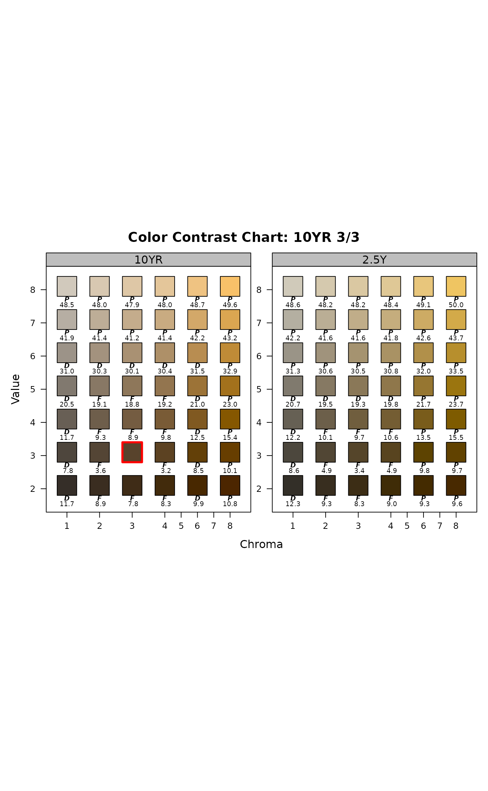
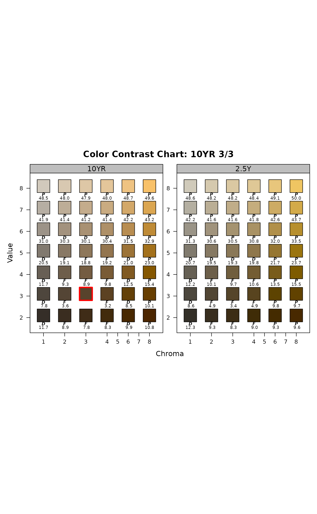
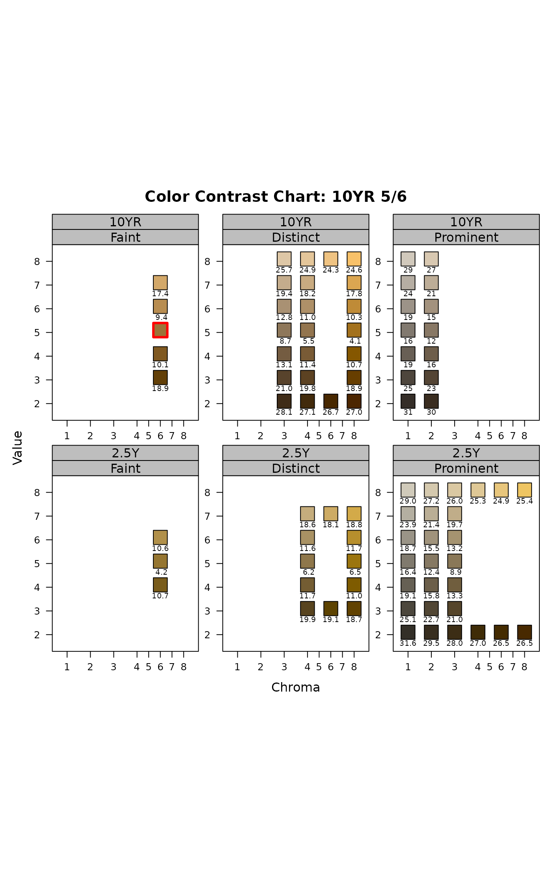
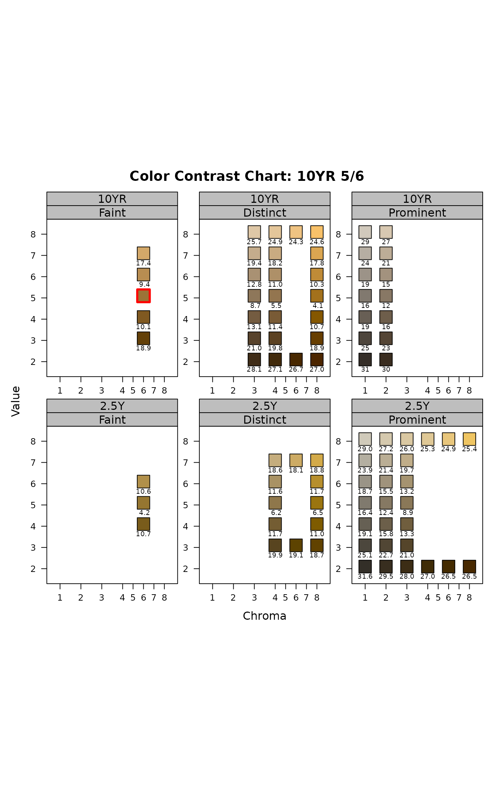

Compare one or more pages from a simulated Munsell book of soil colors to a reference color.
contrastChart(
m,
hues,
ccAbbreviate = 1,
style = "hue",
gridLines = FALSE,
de00.cex = 0.6,
cc.cex = 0.6,
thresh = NULL,
returnData = FALSE
)Arguments
- m
Munsell representation of a single color for comparison e.g. '10YR 4/3'
- hues
vector of one or more Munsell hue pages to display
- ccAbbreviate
length of abbreviated contrast classes, use 0 to suppress labels
- style
'hue' or 'CC', see details
- gridLines
logical, add grid lines to the color contrast chart
- de00.cex
character scaling applied to dE00 annotation
- cc.cex
character scaling applied to contrast class annotation
- thresh
threshold (<) applied to pair-wise comparisons and resulting color chips
- returnData
logical, return lattice figure + data used to generate the figure
Details
A simulated Munsell color book page or pages are used to demonstrate color contrast between all chips and the reference color m (highlighted in red). NCSS color contrast class and CIE delta-E00 values are printed below all other color chips. Munsell color chips for chroma 5 and 7 are omitted, but axis labels are retained as a reminder of this fact.
Setting style='hue' emphasizes the contrast classes and CIE delta-E00 of chips adjacent to m. Setting style='CC' emphasizes adjacent chips according to respective contrast class via lattice panels.
Two-way panels are used when multiple hues are provided and style='CC'. The default output can be greatly enhanced via:
latticeExtra::useOuterStrips(...,
strip = strip.custom(bg=grey(0.85)),
strip.left = strip.custom(bg=grey(0.85))
)
Examples
# single hue page
contrastChart(m = '10YR 3/3', hues = '10YR')
 # multiple hue pages
contrastChart(m = '10YR 3/3', hues = c('10YR', '2.5Y'))

# contrast class, single hue
contrastChart(m = '10YR 3/3', hues = '10YR', style='CC')
# multiple hue pages
contrastChart(m = '10YR 3/3', hues = c('10YR', '2.5Y'))

# contrast class, single hue
contrastChart(m = '10YR 3/3', hues = '10YR', style='CC')
 # contrast class, multiple hues
# consider latticeExtra::useOuterStrips()
contrastChart(m = '10YR 5/6', hues = c('10YR', '2.5Y'), style='CC')

# contrast class, multiple hues
# consider latticeExtra::useOuterStrips()
contrastChart(m = '10YR 5/6', hues = c('10YR', '2.5Y'), style='CC')
